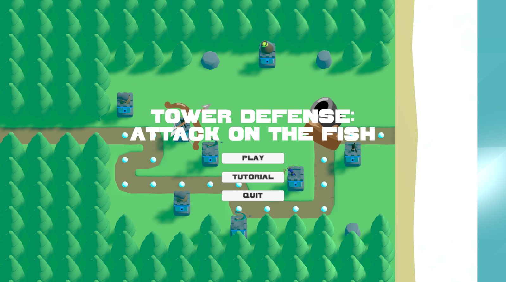

Tower Defense: Attack on the Fish
Tower Defense: Attack on the Fish was my final Unity project in which I added lore to tower defense. It has three levels and a variety of enemies.
Tower Defense: Attack on the Fish was my final Unity project in which I added lore to tower defense. It has three levels and a variety of enemies.
A personal project full of all the homebrew my friends and I made. We combined it all to an interactive website.
A project made with a couple of other people in C# console. A text-based treasure hunting game where you try to find the secret temple. The repository can be found here.